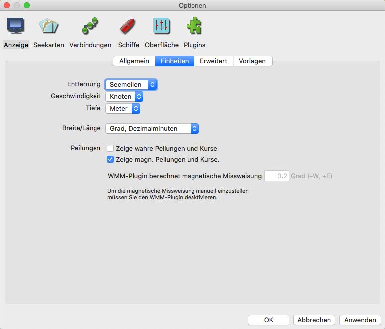
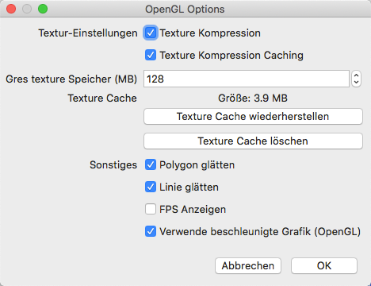
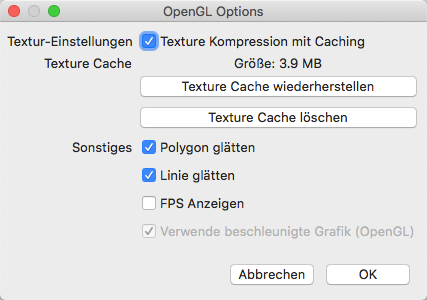

Einstellungen Anzeige
Einstellungen Anzeige
Die Einstellungen für Anzeige sind in drei Laschen unterteilt.
Lasche Allgemein

Der Navigations Modus gestattet eine Kartenansicht mit Nord oben oder Kurs oben.
Vorausschau Modus: Siehe hier.
Für die Karten Anzeige gibt es:
Quilting "Patchwork" Kartenanzeige aktivieren Siehe hier.
Maßstab bei Kartenwechsel beibehalten Normalerweise öffnet OpenCPN die neue Karte beim Kartenwechsel im Maßstab nahe ihres eigenen Maßstabs, der Zoomfaktor
bleibt der Gleiche. Bei Aktivierung dieser Funktion behält OpenCPN beim Kartenwechsel ungefähr den Maßstab der vorherigen Karte. Der Zoom-Faktor wird erhöht, wenn zu
einem kleineren Maßstab gewechselt wird.
Die Allgemeinen Optionen sind:
Weiches Schwenken/Zoomen Geht am Besten zusammen mit OpenGL, daher aktivieren Sie es mit OpenGL. Probieren Sie es, wie es mit Ihrer Grafikhardware funktioniert.
Diese Funktion arbeitet nicht bei aktiviertem "Mausrad-Zoom auf Cursorposition aktivieren" unter Lasche Einstellungen/Sonstiges.
Zoom zum Cursor Normalerweise wird beim Klick in den Bildschirm die Anzeige am Klickpunkt zentriert. Das Mausrad-Zoom verwendet immer die Mitte der Anzeige. Mit Aktivierung
dieser Funktion geschieht das Zoomen am Cursor-Punkt. Das heißt, sobald gezoomt wird, bleibt der Cursor an der gleichen Stelle des Bildschirms und an einer ungefähr gleichen
geografischen Position. Das ist von Vorteil zum feineren Zoomen an einer Position mit dem Cursor. "Weiches Schwenken/Zoomen" aus dem vorherigen Punkt wird bei dieser Aktivierung vollständig
abgeschaltet.
Als Anzeige-Parameter kann gewählt werden:
Gitter zeigen Überlagert der Karte ein sich automatisch anpassendes Längen/Breiten Netz. Das Gitter ist nützlich bei Vektor-Karten, die das nicht von Haus aus haben.
Kartenumrisse anzeigen Es werden die Ränder der verfügbaren Karten gezeigt.
Vektor Karten sind grün, RasterKarten sind rot und verfügbare größere CM93 Karten sind purpur.
CM93 Kartenumrisse erscheinen nicht im Quilting Modus. Als Vorsichtsmaßnahme sind bei CM93 die Umrisse
von Gefahrenstellen mit groß skalierten Karten auch bei "Kartenumrisse abgeschaltet" verfügbar, wenn
Quilting aus ist und die Skalierung groß genug ist. Bei einem Maßstab von 1:200.000 oder
größer werden diese isolierten Inseln und Gefahrenstellen gezeigt. Es wird daher empfohlen,
bei großen Passagen in CM93 kein Quilting zu verwenden. Siehe hier.
Tiefeneinheit (oben rechts) anzeigen Zeigt die Karten Tiefeneinheit, falls verfügbar. Im Quilting Modus werden Einheiten nur gezeigt,
wenn alle Karten im Quilting die gleiche Tiefeneinheit haben.
Lasche Einheiten

Hier werden die zu verwendeten Einheiten für Entfernung, Geschwindigkeit, Tiefe und Breite/Länge gewählt.
Unter Peilung kann die Umstellung der wahren (GPS) Grade in magnetische Gradanzeige erfolgen.
Angenommene magn. Variation ist die Abweichung von der wahren Gradanzeige. Siehe hierzu auch das WMM-Plugin.
Lasche Erweitert
Bei Karten Anzeige gibt es:
Schiefe/gedrehte Raster-Karten genordet anzeigen Korrigiert schiefe (nicht genordete) Raster-Karten. Ein typisches Beispiel dafür sind
die Intra-Coastal-Waterway (ICW) Karten. Weiteres hier.
Quilting "Patchwork" Kartenanzeige im Vollbildmodus deaktivieren Standardmäßig werden alle sichtbaren Karten mit passender Skalierung im "Quilting" verwendet.
Mit dieser Aktivierung werden nur Karten, die die Mitte des Bildschirms betreffen, für das "Quilting" benutzt. Das ist leichter für einige Systeme und
gibt mitunter eine Leistungssteigerung.
Kurs oben Aktualisierungsintervall (Sek.) Bestimmt, wie oft die gesamte angezeigte Karte aktualisiert werden soll. Die Eigenes-Schiff und AIS-Symbole werden weiterhin jede Sekunde aktualisiert. Der Standard Wert ist 15 Sekunden.
Karten-Zoom Detail-Grad Der Schieberegler beeinflußt das Verhalten beim Vergrößern von Karten. Vorsicht: Übervergrößerte Karten sind nicht mehr genau.
Die Allgemeinen Optionen sind:
Alle Wegpunkte sperren, außer wenn ein Wegpunkt-Dialog angezeigt wird Sperrt Wegpunkte und verhindert damit, sie versehentlich zu verschieben. Es sollte unterwegs aktiviert sein.
Bestätigung f. Löschen Tracks und Routen initiiert eine Sicherheitsabfrage.
Schiffsglocke läuten Jede halbe Stunde ist die tradionelle Schiffsglocke zu hören.
Grafik: Verwende beschleunigte Grafik (OpenGL) Verbesserte Grafikdarstellung durch Verwendung der OpenGL Bibliothek. Testen Sie, ob die Optionen mit Ihrem Grafikchip funktionieren. Beginnen Sie mit der Deaktivierung aller Optionen.

Das Bild oben erreichen Sie nur, wenn in der Datei opencpn.ini der Wert für OpenGLExpert auf 1 gesetzt ist (OpenGLExpert=1). Standardmäßig ist das abgeschaltet (OpenGLExpert=0) und das Bild sieht dann wie unten aus:
